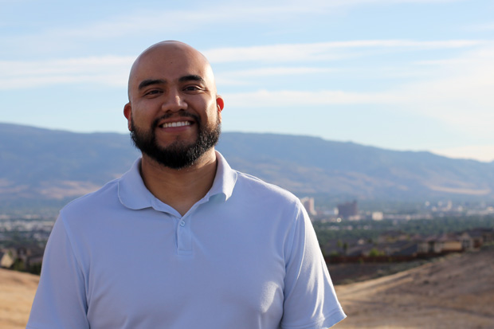

About Oz
Hi, my name is Oswaldo Mendoza, but everyone calls me Oz. I have been designing and build websites for over 10 years. I enjoy the process of helping my clients create a user-friendly website that will help grow their business. Here’s some more information about me.
My Story
I am a web designer based in Reno, Nevada. I started my career working as an in-house graphic artist for local advertising agencies working on print and collateral material. I learned a lot about creating designs that were print-ready using the latest creative programs and about advertising and marketing. I transitioned into designing for online after getting laid off in 2009. Most of my experience came from freelancing for small businesses and also from working as designer in-house for a digital marketing agency. Currently I work full-time as a senior web designer for the marketing department at the University of Nevada, Reno. This position has allowed me to become more familiar with web accessibility and serve a more diverse audience. I also continue to freelance for marketing agencies in the evenings and on weekends to help them with their projects.
When I am not working I enjoy spending time with my wife watching a good Netflix series, hanging out with family and friends, or enjoying being outdoors.
Need help with your website?
Let’s work together to build a website that works for your business.
Send me an emailAs a full service agency, we are always looking to integrate exceptional freelancers that we trust to do good work, invoice us appropriately, and follow a time-line. Oz is one of those people.
We have hired him to fully develop two websites and as a consultant on various website projects in which we need his expertise.
He is knowledgeable, responsive, creative, and stays on time and within budget. We find him to be an exceptional addition to our pool of freelancers and would not hesitate to use him again.
Oswaldo did excellent work in designing my Realtor business web site and working all the necessary details such as connecting my website to all my social medias and made it look outstanding and professional.
Oswaldo is always willing to go the extra mile to help his customers not only on web designing but computer issues or setting up Google My Business or any other client’s request etc. I really appreciated that Oswaldo was always willing to work around my busy schedule and was always ready to listen to my business needs.
Oswaldo is a truly pleasant person; he is a very skilled individual who possesses an excellent work ethic and displays a strong commitment to his job and a very high degree of professionalism. I am extremely thankful for all Oswaldo’s support in helping me move my business forward and for sure it is nice to have an honest professional who holds YOUR best interest first and foremost! I can, without reservation, make a very strong recommendation of his services.
Oswaldo has been working with us as our web developer and web design consultant for several years. He has excellent technical skills as well as creative skills. He designed a new website for us and improves and updates our site as needed. He has always been very responsive to any website issues we have had.